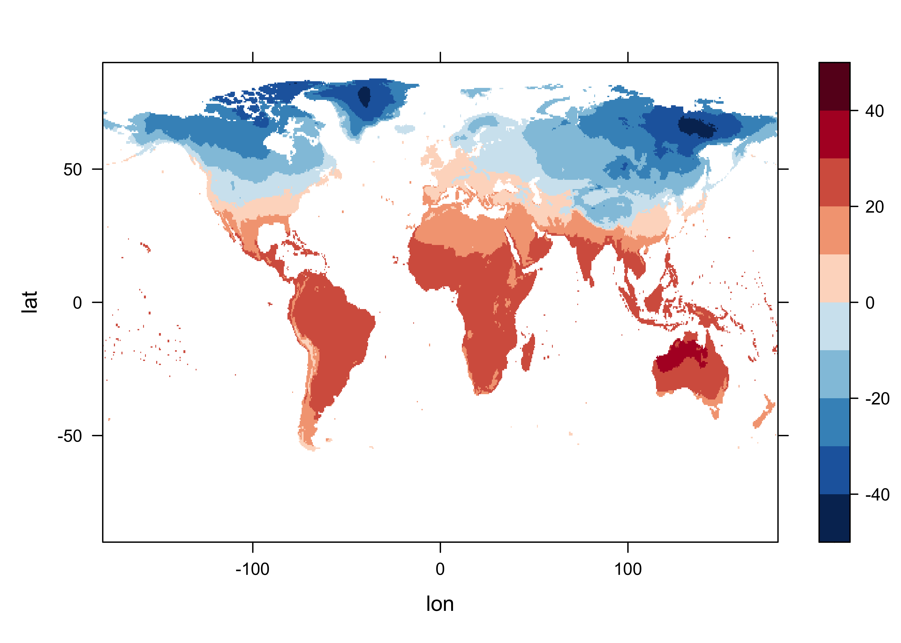
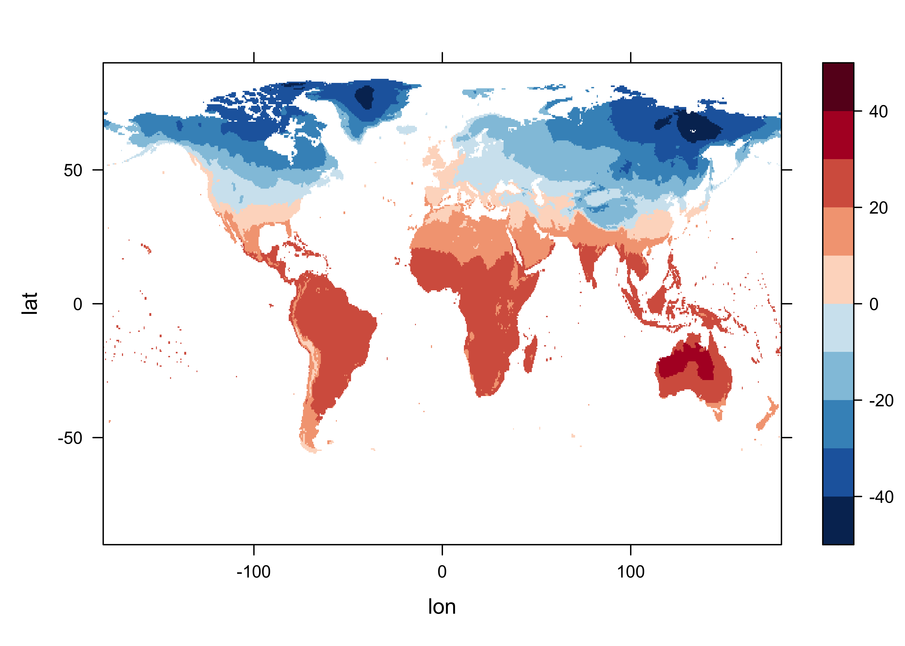
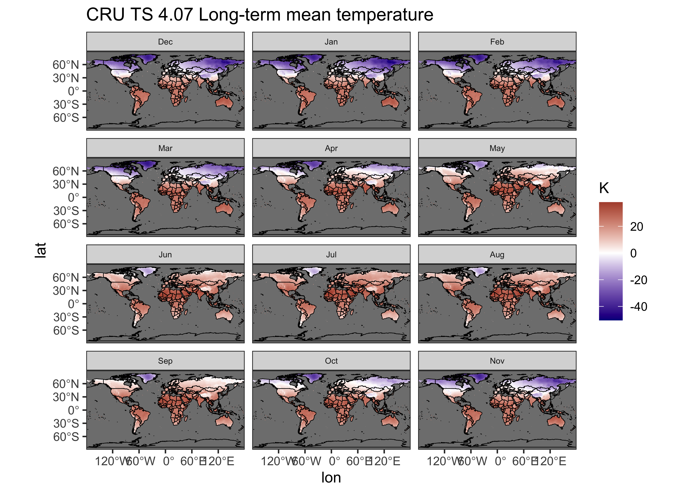
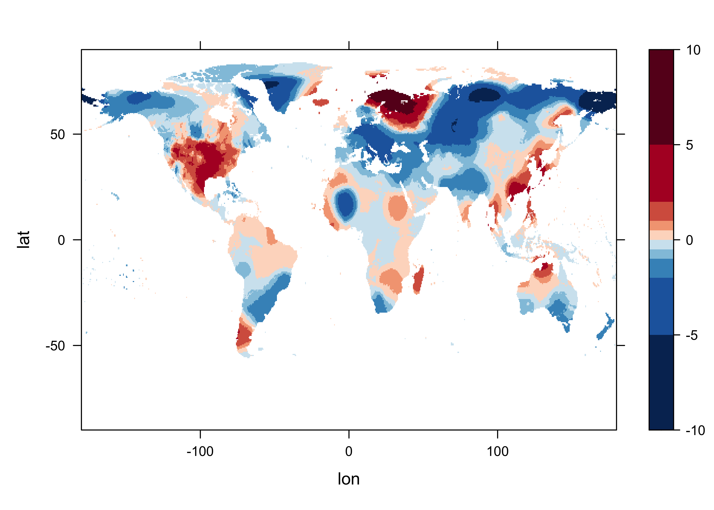

NOTE: This page has been revised for Winter 2024, but may undergo further edits.
A common task in analyzing Earth-system science data is the
calculation of “anomalies” or differences between individual months or
years and some long-term average. This will produce two new data sets:
1) the long-term means (“ltm”) and 2) the anomalies (“anm”). The example
here gets the long-term means and anomlies for the CRU TS 4.07
near-surface air temperature data set
cru_ts4.07.1901.2022.tmp.dat. The data include monthly
values for the interval 1901 - 2022, and the long-term means will be
calculated for one of the commonly used base periods, 1961 - 1990.
Load the necessary packages, and set paths and filenames:
## Linking to GEOS 3.11.0, GDAL 3.5.3, PROJ 9.1.0; sf_use_s2() is TRUE# set path and filename
ncpath <- "/Users/bartlein/Dropbox/DataVis/working/data/nc_files/"
ncname <- "cru_ts4.07.1901.2022.tmp.dat.nc"
ncfname <- paste(ncpath, ncname, sep="")
dname <- "tmp" # note: tmp means temperature (not temporary)Open the netCDF file (and list its contents), and read the dimension variables:
## File /Users/bartlein/Dropbox/DataVis/working/data/nc_files/cru_ts4.07.1901.2022.tmp.dat.nc (NC_FORMAT_CLASSIC):
##
## 2 variables (excluding dimension variables):
## float tmp[lon,lat,time]
## long_name: near-surface temperature
## units: degrees Celsius
## correlation_decay_distance: 1200
## _FillValue: 9.96920996838687e+36
## missing_value: 9.96920996838687e+36
## int stn[lon,lat,time]
## description: number of stations contributing to each datum
## _FillValue: -999
## missing_value: -999
##
## 3 dimensions:
## lon Size:720
## long_name: longitude
## units: degrees_east
## lat Size:360
## long_name: latitude
## units: degrees_north
## time Size:1464 *** is unlimited ***
## long_name: time
## units: days since 1900-1-1
## calendar: gregorian
##
## 8 global attributes:
## Conventions: CF-1.4
## title: CRU TS4.07 Mean Temperature
## institution: Data held at British Atmospheric Data Centre, RAL, UK.
## source: Run ID = 2304141047. Data generated from:tmp.2304141039.dtb
## history: Fri 14 Apr 11:30:51 BST 2023 : User f098 : Program makegridsauto.for called by update.for
## references: Information on the data is available at http://badc.nerc.ac.uk/data/cru/
## comment: Access to these data is available to any registered CEDA user.
## contact: support@ceda.ac.ukRead latitude, longitude, and time:
## [1] -179.75 -179.25 -178.75 -178.25 -177.75 -177.25## [1] -89.75 -89.25 -88.75 -88.25 -87.75 -87.25## [1] 720 360# get time
time <- ncvar_get(ncin,"time")
tunits <- ncatt_get(ncin,"time","units")
nt <- dim(time)
nm <- 12
ny <- nt/nmDecode the time variable (but don’t overwrite anything):
# decode time
cf <- CFtime(tunits$value, calendar = "proleptic_gregorian", time) # convert time to CFtime class
timestamps <- CFtimestamp(cf) # get character-string times
time_cf <- CFparse(cf, timestamps) # parse the string into date components
# list a few values
head(time_cf)## year month day hour minute second tz offset
## 1 1901 1 16 0 0 0 00:00 380
## 2 1901 2 15 0 0 0 00:00 410
## 3 1901 3 16 0 0 0 00:00 439
## 4 1901 4 16 0 0 0 00:00 470
## 5 1901 5 16 0 0 0 00:00 500
## 6 1901 6 16 0 0 0 00:00 531Note that the day variable value is 16, the middle day
of each month.
Read the data, and get variable and global attributes:
# get temperature
tmp_array <- ncvar_get(ncin,dname)
dlname <- ncatt_get(ncin,dname,"long_name")
dunits <- ncatt_get(ncin,dname,"units")
fillvalue <- ncatt_get(ncin,dname,"_FillValue")
dim(tmp_array)## [1] 720 360 1464# get global attributes
title <- ncatt_get(ncin,0,"title")
institution <- ncatt_get(ncin,0,"institution")
datasource <- ncatt_get(ncin,0,"source")
references <- ncatt_get(ncin,0,"references")
history <- ncatt_get(ncin,0,"history")
Conventions <- ncatt_get(ncin,0,"Conventions")Close the netCDF data set.
Replace netCDF fill values with R NA’s
# replace netCDF fill values with NA's
tmp_array[tmp_array==fillvalue$value] <- NA
length(na.omit(as.vector(tmp_array[,,1])))## [1] 67420Get a single slice of the array, say, December 2022 (n = 1464), and make a quick levelplot.
# levelplot of the slice
n <- 1464
grid <- expand.grid(lon=lon, lat=lat)
cutpts <- c(-50,-40,-30,-20,-10,0,10,20,30,40,50)
levelplot(tmp_array[,, n] ~ lon * lat, data=grid, at=cutpts, cuts=11, pretty=T,
col.regions=(rev(brewer.pal(10,"RdBu"))))
Get the indices for the beginning and end of the base period, and save them as a string.
# get beginning obs of base period
begyr <- 1961; endyr <- 1990; nyrs <- endyr - begyr + 1
begobs <- ((begyr - time_cf$year[1]) * nm) + 1
endobs <- ((endyr - time_cf$year[1] + 1) * nm)
base_period <- paste(as.character(begyr)," - ", as.character(endyr), sep="")
print(c(begyr, endyr, begobs, endobs, base_period))## [1] "1961" "1990" "721" "1080" "1961 - 1990"Get a levelplot of the first observation in the base period.
# levelplot of begobs
tmp_slice <- tmp_array[,, begobs]
grid <- expand.grid(lon=lon, lat=lat)
cutpts <- c(-50,-40,-30,-20,-10,0,10,20,30,40,50)
levelplot(tmp_slice ~ lon * lat, data=grid, at=cutpts, cuts=11, pretty=T,
col.regions=(rev(brewer.pal(10,"RdBu"))))Create a new array with just the base period data in it.
## [1] 720 360 360Get a levelplot of the first time-slice of that, which should match the previous plot
The long-term means are calculated by looping over the grid cells and months.
## [1] 720 360 12for (j in 1:nlon) {
for (k in 1:nlat) {
if (!is.na(tmp_array_base[j, k, 1])) {
for (m in 1:nm)
tmp_ltm[j, k, m] <- mean(tmp_array_base[j, k, seq(m, (m + nm*nyrs - 1), by=nm)])
}
}
}Levelplot of the January long-term means:
# levelplot of tmp_ltm
tmp_slice <- tmp_ltm[,, 1]
grid <- expand.grid(lon=lon, lat=lat)
cutpts <- c(-50,-40,-30,-20,-10,0,10,20,30,40,50)
levelplot(tmp_slice ~ lon * lat, data=grid, at=cutpts, cuts=11, pretty=T,
col.regions=(rev(brewer.pal(10,"RdBu"))))
A {ggplot2} multi-panel maps of the long-term means can
be made by turning the tmp_ltm array into a dataframe as
follow:
# unwrap the array to a long vector, stacking the months
tmp_ltm_vector <- as.vector(tmp_ltm)
lonlat <- as.matrix(expand.grid(lon, lat))
# month names
np <- dim(tmp_ltm)[1] * dim(tmp_ltm)[2]
month <- c(rep("Jan", np), rep("Feb", np), rep("Mar", np), rep("Apr", np), rep("May", np), rep("Jun", np),
rep("Jul", np), rep("Aug", np), rep("Sep", np), rep("Oct", np), rep("Nov", np), rep("Dec", np))
# make the dataframe
tmp_ltm_df <- data.frame(lonlat[,1], lonlat[,2], tmp_ltm_vector, month)
names(tmp_ltm_df) <- c("lon", "lat", "tmp_ltm", "month")Get a world outline:
# world_sf
world_sf <- st_as_sf(maps::map("world", plot = FALSE, fill = TRUE))
world_otl_sf <- st_geometry(world_sf)Make the map.
# ggplot2 map of tmp_ltm
ggplot() +
geom_tile(data = tmp_ltm_df, aes(x = lon, y = lat, fill = tmp_ltm)) +
geom_sf(data = world_otl_sf, col = "black", fill = NA) +
# geom_sf(data = grat_otl, col = "gray80", lwd = 0.5, lty = 3) +
coord_sf(xlim = c(-180, +180), ylim = c(-90, 90), expand = FALSE) +
facet_wrap(~factor(month, levels =
c("Dec", "Jan", "Feb", "Mar", "Apr", "May", "Jun", "Jul", "Aug", "Sep", "Oct", "Nov")), nrow = 4, ncol = 3) +
scale_fill_gradient2(low = "darkblue", mid="white", high = "darkred", midpoint = 0.0) +
# scale_y_continuous(breaks = seq(-90, 90, 90), expand = c(0,0)) + # removes whitespace within panels
# scale_x_continuous(breaks = seq(-180, 180, 90), expand = c(0,0)) +
scale_y_continuous(breaks = seq(-90, 90, 30)) +
scale_x_continuous(breaks = seq(-180, 180, 60)) +
labs(title="CRU TS 4.07 Long-term mean temperature", fill="K") +
theme_bw() + theme(strip.text = element_text(size = 6))
Note the rearrangement of the months (“Dec”, …, “Nov”) in the
factor() function. This places the standard meteorological
seasons, DJF (December, January, February), MAM, JJA, SON on each row of
the plot.
The anomalies are obtaimed for each grid point by simply expanding
the twelve ltm values (one for each month of the year) over the
ny years of the record, and then differencing. In this way,
the anomaly for each January in the record is the difference between the
“absolute” (but not “absolute value” (abs())) or observed
value, and the January long-term mean.
Get a levelplot of an anomaly. Note the different cutpoints.
# levelplot of tmp_ltm
tmp_slice <- tmp_anm[,, 1]
grid <- expand.grid(lon=lon, lat=lat)
cutpts <- c(-10,-5,-2,-1,-0.5,0,0.5,1,2,5,10)
levelplot(tmp_slice ~ lon * lat, data=grid, at=cutpts, cuts=11, pretty=T,
col.regions=(rev(brewer.pal(10,"RdBu"))))
Write out netCDF files of the long-term means and anomalies in the usual way.
# netCDF file of ltm's
# path and file name, set dname
ncpath <- "/Users/bartlein/Projects/RESS/data/nc_files/"
ncname <- "cru_ts4.07.1961.1990.tmp.ltm.nc"
ncfname <- paste(ncpath, ncname, sep="")
dname <- "tmp_ltm" # note: tmp means temperature (not temporary)
# get time values for output
time_out <- time[(begobs + (nyrs/2)*nm):(begobs + (nyrs/2)*nm + nm - 1)]
# recode NA's to fill_values
tmp_ltm[is.na(tmp_ltm)] <- fillvalue$value
# create and write the netCDF file -- ncdf4 version
# define dimensions
londim <- ncdim_def("lon","degrees_east",as.double(lon))
latdim <- ncdim_def("lat","degrees_north",as.double(lat))
timedim <- ncdim_def("time",tunits$value,as.double(time_out))
# define variables
dlname <- "near-surface air temperature long-term mean"
tmp_def <- ncvar_def("tmp_ltm","degrees Celsius",list(londim,latdim,timedim),fillvalue$value,dlname,prec="single")
# create netCDF file and put arrays
ncout <- nc_create(ncfname,tmp_def,force_v4=TRUE)
# put variables
ncvar_put(ncout,tmp_def,tmp_ltm)
# put additional attributes into dimension and data variables
ncatt_put(ncout,"lon","axis","X") #,verbose=FALSE) #,definemode=FALSE)
ncatt_put(ncout,"lat","axis","Y")
ncatt_put(ncout,"time","axis","T")
ncatt_put(ncout,"tmp_ltm","base_period", base_period)
# add global attributes
ncatt_put(ncout,0,"title",title$value)
ncatt_put(ncout,0,"institution",institution$value)
ncatt_put(ncout,0,"source",datasource$value)
ncatt_put(ncout,0,"references",references$value)
history <- paste("P.J. Bartlein", date(), sep=", ")
ncatt_put(ncout,0,"history",history)
ncatt_put(ncout,0,"Conventions",Conventions$value)
# Get a summary of the created file:
ncout
# close the file, writing data to disk
nc_close(ncout)# netCDF file of anomalies
# path and file name, set dname
ncpath <- "/Users/bartlein/Projects/RESS/data/nc_files/"
ncname <- "cru_ts4.07.1901.2022.tmp.anm.nc"
ncfname <- paste(ncpath, ncname, sep="")
dname <- "tmp_anm" # note: tmp means temperature (not temporary)
# recode NA's to fill_values
tmp_anm[is.na(tmp_anm)] <- fillvalue$value
# create and write the netCDF file -- ncdf4 version
# define dimensions
londim <- ncdim_def("lon","degrees_east",as.double(lon))
latdim <- ncdim_def("lat","degrees_north",as.double(lat))
timedim <- ncdim_def("time",tunits$value,as.double(time))
# define variables
dlname <- "near-surface air temperature anomalies"
tmp_def <- ncvar_def("tmp_anm","degrees Celsius",list(londim,latdim,timedim),fillvalue$value,dlname,prec="single")
# create netCDF file and put arrays
ncout <- nc_create(ncfname,tmp_def,force_v4=TRUE)
# put variables
ncvar_put(ncout,tmp_def,tmp_anm)
# put additional attributes into dimension and data variables
ncatt_put(ncout,"lon","axis","X") #,verbose=FALSE) #,definemode=FALSE)
ncatt_put(ncout,"lat","axis","Y")
ncatt_put(ncout,"time","axis","T")
ncatt_put(ncout,"tmp_anm","base_period", base_period)
# add global attributes
ncatt_put(ncout,0,"title",title$value)
ncatt_put(ncout,0,"institution",institution$value)
ncatt_put(ncout,0,"source",datasource$value)
ncatt_put(ncout,0,"references",references$value)
history <- paste("P.J. Bartlein", date(), sep=", ")
ncatt_put(ncout,0,"history",history)
ncatt_put(ncout,0,"Conventions",Conventions$value)
# Get a summary of the created file:
ncout
# close the file, writing data to disk
nc_close(ncout)